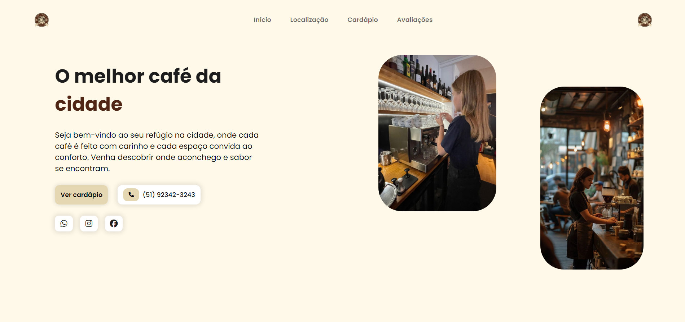
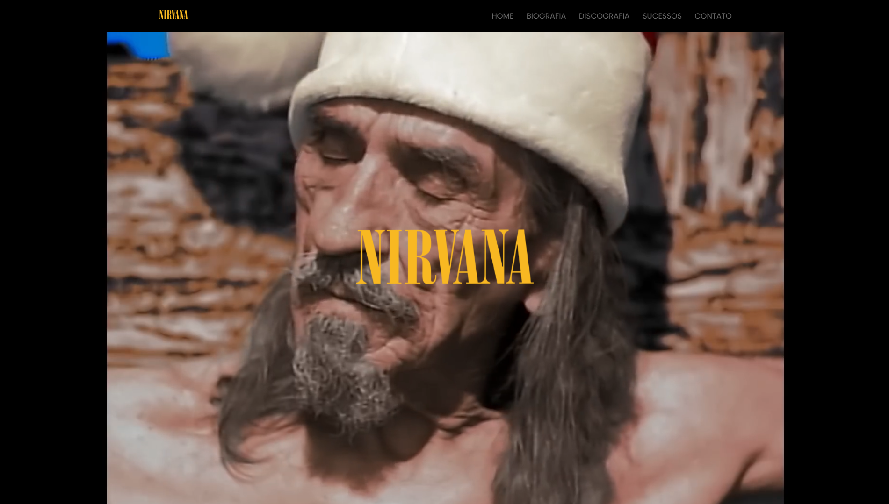

Portfólio
Café & Conforto
Landing page para a cafeteria fictícia "Café & Conforto", com o objetivo de transmitir uma atmosfera aconchegante e acolhedora, perfeita para quem deseja saborear cafés especiais ou trabalhar/ler em um ambiente tranquilo. Características principais: Design acolhedor e cores quentes, cabeçalho, menu, seção de ambiente, localização e seção de contato
Nirvana
Landing page desenvolvida com uma experiência visualmente envolvente e fiel à estética icônica da banda Nirvana. O objetivo principal foi criar um design que refletisse a energia do grunge, mantendo uma navegação simples e acessível. A página apresenta as seguintes seções: HOME, apresentando de fundo o clipe da música Heart-Shaped Box; BIOGRAFIA; DISCOGRAFIA; SUCESSOS; SEÇÃO DE CONTATO